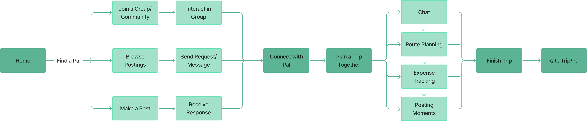
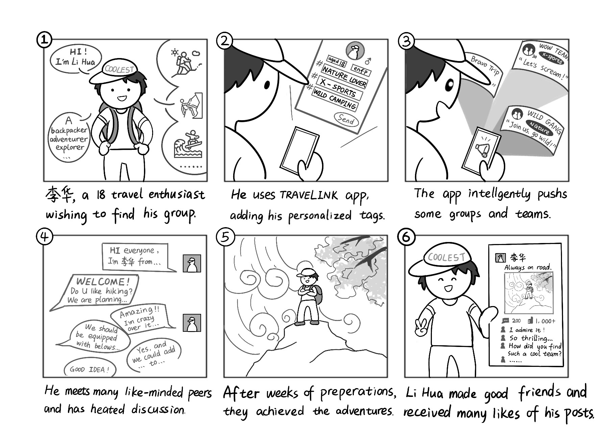
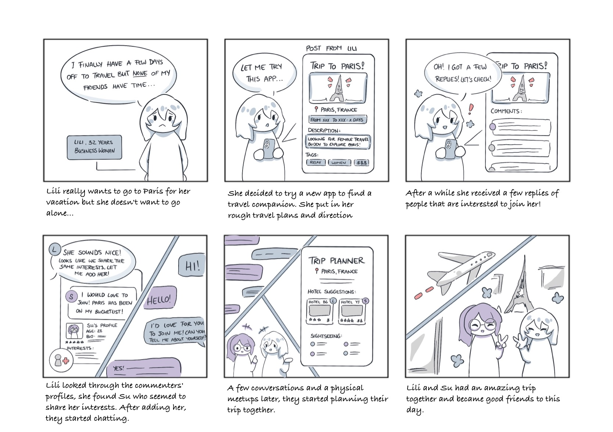
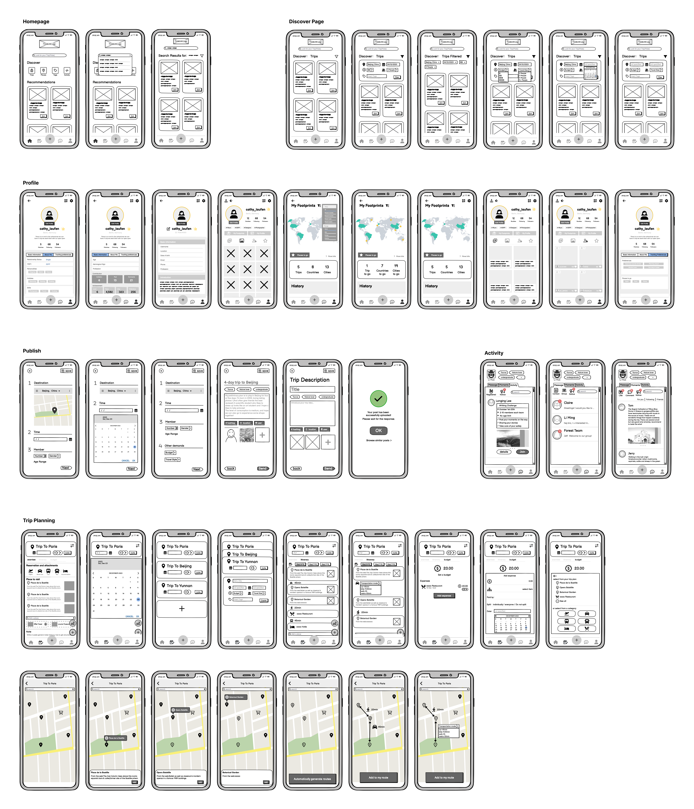
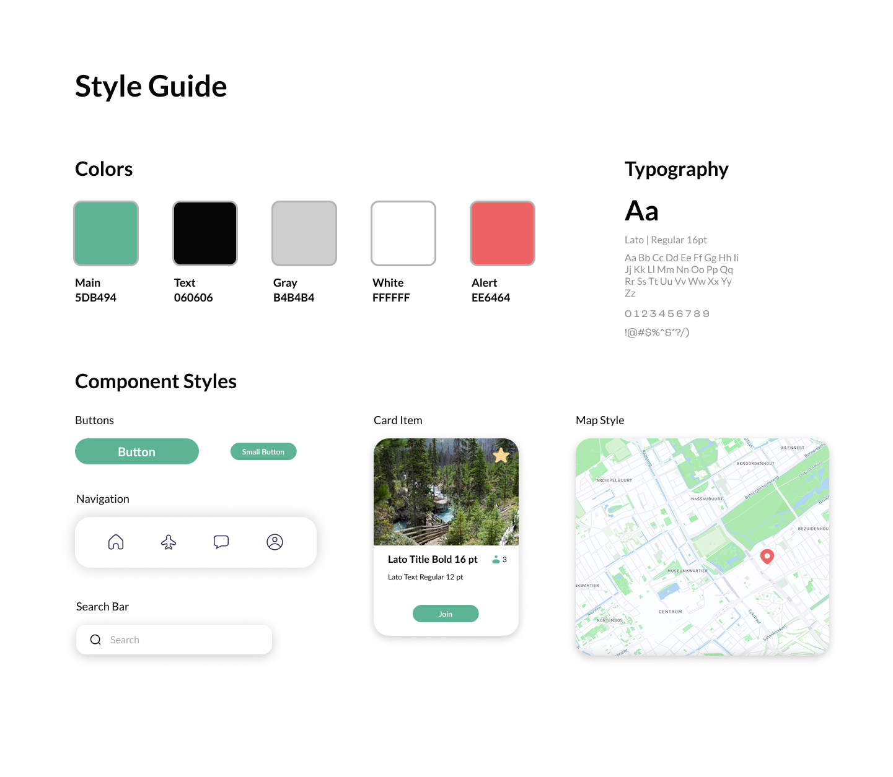
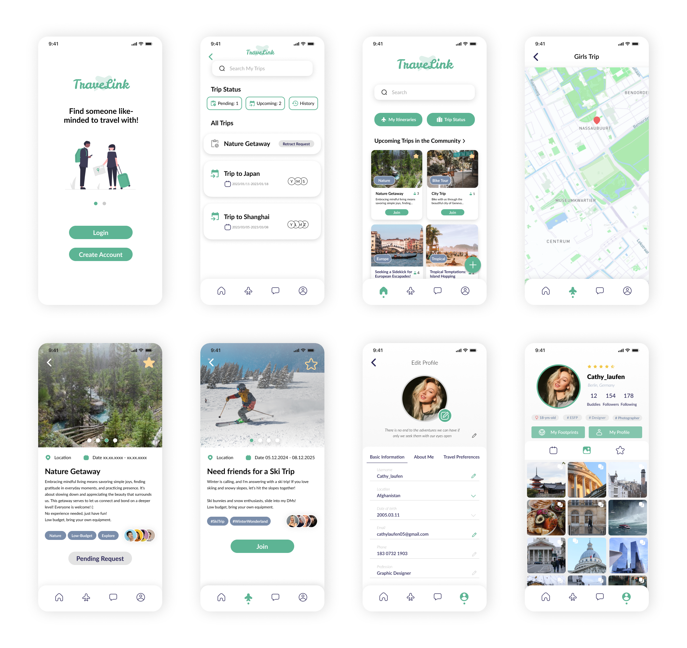

TraveLink App

Project Overview
TraveLink is a mobile app designed to connect travelers with compatible, verified companions – fostering safe, enjoyable, and memorable shared travel experiences.
The concept integrates social interaction, trust-building, and usability to create a seamless platform where travelers can confidently plan and share their journeys.
View PrototypeChallenge
In today’s world, travel plays an important role in many people’s lives – yet finding the right companions to share those experiences with can be surprisingly difficult. Differences in schedules, interests, and expectations often make coordination challenging, and while solo travel offers freedom, it’s not for everyone.
Existing solutions are often informal, unverified, or overlook user safety and compatibility. The design challenge was to create a digital platform that enables travelers to connect meaningfully while addressing key pain points around trust, credibility, and convenience.
TraveLink was designed to bridge this gap by offering a secure, user-centered experience where travelers can connect based on shared goals and personalities. With verified profiles, compatibility matching, and safety-focused features, the app balances human connection and digital verification, helping users feel both socially engaged and secure throughout their journey.
Process
A quick overview of the key stages behind the TraveLink design process.
Research
User Research
This project was conducted in China, which strongly influenced the scope of our research. As a result, our findings emphasize the contrast between Chinese users and international users, particularly in their choice of platforms, communication habits, and social norms around travel planning. This dual-user perspective allowed us to identify both shared motivations and culturally specific differences, ensuring that TraveLink was designed to support cross-cultural connections in a global travel context.
To better understand how travelers currently find companions and what challenges they face, we conducted a mixed-method research process combining observations, a quantitative survey, and in-depth interviews. Our goal was to uncover behavioral patterns, motivations, and pain points that would inform the foundation of TraveLink’s design.
Current Way of Finding Travel Companions
We observed that most users rely on two main channels to find travel companions today. The first is social media, where Chinese users primarily post on platforms such as Xiaohongshu (小红书) and Weibo (微博), while international users often turn to Facebook, Tinder, or Bumble (Friends).
The second channel is group chats, where users actively take initiative by posting requests. Chinese users mostly rely on WeChat (微信), while international users use a mix of WhatsApp, Signal, Telegram, and Facebook Messenger.
While these methods are widely used, they remain highly informal, unverified, and inconsistent, often leading to uncertainty around trust, safety, and reliability.
Travel Planning Behaviours
We found that personality and budget play a major role in how users plan their trips. Planning styles generally fall into three categories.
Some users follow a detailed planning approach. They identify key tourist attractions in advance, create time-based routes, gather detailed information such as timetables and attraction descriptions, and book tickets and accommodation early. These users often collect all plans in tools such as Excel, Word, or notebooks.
Others prefer a rough planning style. They decide on attractions loosely, follow a vague daily schedule, conduct limited research beforehand, and remain flexible during the trip.
A third group follows a free-spirited approach. These travelers only define their start and end points, avoid fixed itineraries, rely heavily on spontaneity and local recommendations, and make minimal arrangements in advance.
Survey Insights
A survey was distributed across multiple WeChat and WhatsApp groups to evaluate user interest in a travel companion app and gather insights into user needs and preferences. A total of approximately 100 responses were collected. The results showed strong interest in a dedicated matching platform, high demand for verified profiles and safety features, and major concerns around trust, reliability, and compatibility.
In-Depth Interviews
We conducted 12 in-depth interviews with individuals from diverse travel backgrounds. Some participants had extensive experience traveling with strangers through online platforms, while others had only connected with short-term companions for specific activities or events. This range allowed us to capture both beginner and experienced perspectives on travel companionship.
Key Findings
- Purpose of Finding Travel Companions
The primary motivation for most users is cost sharing, especially for accommodation and transportation. The social aspect also plays a major role, as many travelers want company and shared experiences. Safety is a critical factor, particularly for solo and female travelers. Additionally, many users face scheduling challenges, as friends often do not have matching availability. - Main Concerns with Travelling with Strangers
The most significant concern is personal safety, including fears related to physical harm and theft. Compatibility is another major worry due to potential personality clashes. Reliability also raises concern, especially when it comes to punctuality, commitment, and following planned itineraries. - Travel Goals and Preferences
Users differ greatly in their planning styles, ranging from highly structured to fully spontaneous. Preferences also vary in terms of journey duration, with some users seeking long-term companions for entire trips, while others only want short-term partners for specific activities. - Safety Research
Before traveling, many users – especially women – conduct extensive research related to safety. This includes public transportation systems, local infrastructure, surveillance environments, and accommodation near populated areas. - Compatibility and Trust Building
Being aligned in terms of budget, travel goals, and expectations is seen as essential for a successful match. Many users also emphasized the importance of meeting in person before committing to a longer journey together. - Shared Interests and Bonding
Participants consistently mentioned that shared interests and hobbies, such as rock climbing or photography, make it much easier to connect. Common ground acts as an ice breaker and helps accelerate trust and bonding.
Design Implications
The research findings directly informed the core direction of TraveLink. They emphasized the importance of safety-first design and user verification, compatibility-based matching, support for both short-term and long-term companions, and trust-building tools through profiles, interests, and structured communication.
Competitor Analysis
To better understand the existing market and identify potential opportunities for TraveLink, we analyzed a selection of travel and social connection apps. The goal was to evaluate their core features, strengths, and limitations, and to uncover gaps where TraveLink could provide added value. Below are three representative examples that highlight key patterns observed across the market.
- TripBFF
TripBFF offers a simple travel-matching concept with seamless communication features. It includes visually engaging destination and interest exploration pages, making it easy for users to discover potential travel buddies. However, the platform focuses primarily on initiating connections and provides little support for the actual trip-planning or collaboration process after a match is made. - GoFrendly
GoFrendly is a female-only social app designed to connect women with similar interests and lifestyles. It supports detailed profile creation and includes built-in icebreakers within the chat to help users take the first step in conversation. While the app excels at facilitating initial connections, most interactions rely heavily on user initiative, and the overall feature set is limited beyond messaging. - TravelBuddy
TravelBuddy functions as a social media-style platform that connects travelers with locals, allowing users to find potential companions or informal guides. While the concept encourages cultural exchange, the app presents a heavy commercial feel, with an overloaded interface and suboptimal user experience. This made it a useful reference for identifying UX pitfalls to avoid.
Key Takeaways
Across the competitor landscape, we observed that many platforms are effective at initiating connections, but often fall short in supporting safety, compatibility, and the full travel journey. Most apps either prioritize social interaction without structure or offer planning tools without strong trust-building mechanisms. These gaps highlighted key opportunities for TraveLink to differentiate itself through user verification, compatibility-based matching, and a more holistic, safety-focused travel companion experience.
Concepting
The concepting phase focused on translating research insights into actionable design directions. This included defining the target group, identifying user goals and product requirements, developing personas, exploring feature ideas, and creating storyboards to visualize user journeys. These activities helped shape the foundation for TraveLink’s core functionality and overall experience.
Target Users & Product Requirements
Target Users: Young adults aged 18–35 who enjoy traveling, want to connect with like-minded companions, plan trips collaboratively, share costs, and capture memorable experiences.
Key Features:
- Intelligent Matching: Connect with compatible travel companions based on shared interests.
- Chat & Communication: Plan trips and interact seamlessly within the app.
- Safety: Identity verification and trust-building measures for secure connections.
- Collaborative Travel Planner: Organize itineraries together efficiently.
- Budget Tracker: Manage expenses and split costs transparently.
- Reliability System: Rate and review companions to highlight trustworthiness.
User Stories: The following are representative user stories that illustrate key needs and goals uncovered during research.
- As a young traveler, I want to find like-minded people with shared interests, so that we can plan and enjoy trips together.
- As a solo traveler, I want to verify my companion’s identity through the platform, so that I can feel safe and confident while arranging a trip.
- As an organized traveler, I want to record every step of my itinerary with comprehensive details, so that I have a complete overview of my travel plan in one place.
- As a young traveler, I want to find companions with a similar budget and track expenses, so that costs are transparent and easy to split.
Personas
To bring our research to life, we created personas that represent TraveLink’s key user types, highlighting their goals, behaviors, and travel needs.


Feature Ideas
The goal of TraveLink is to provide a platform for solo travelers to find compatible companions and collaboratively plan their journeys. Based on user research, key features were ideated to address user needs around compatibility, planning, safety, and social connection.
Feature Highlights:
- Interest-based matching to connect like-minded travelers
- Collaborative journey planning
- Community groups for shared discussions and recommendations
- Integrated chat for seamless communication
- Tag system for interests, travel goals, and activities
- Filter and search to easily find compatible companions
- Profile pages with personal information and travel preferences
- Explore page for destinations, activities, and inspiration
- Bill record to manage shared expenses transparently
- Safety guarantees, including ID authentication
- Rating and review system to assess reliability and trustworthiness
User Flow
This simplified user flow provides a general overview of how users move through TraveLink – from discovering potential companions to planning and completing a trip together.

Story Boards
To illustrate how these features come together in real-world scenarios, three storyboards showcasing the user journeys were created.



Prototype
The initial design concepts were translated into a low-fidelity prototype to explore core layouts, navigation patterns, and user flows. This early stage allowed us to validate structure and functionality before moving into visual design.
Low-Fidelity Wireframes
The low-fidelity wireframes focused on defining the overall information architecture, navigation, and key interactions of the platform. These screens were used as the primary foundation for early user testing and iterative refinement.

These low-fidelity wireframes were used as the foundation for early usability testing and design validation. Through usability testing sessions, we gathered feedback on navigation, clarity, and overall flow. Based on these insights, the structure was refined to reduce confusion, improve key user flows, and simplify interactions across the app.
The home experience was optimized to better highlight primary actions, while the planning flow was reworked to feel more intuitive and flexible. Social and profile-related areas were also streamlined to minimize visual clutter and improve accessibility.
These early iterations helped establish a stronger structural foundation before moving into high-fidelity visual design.
Visual Direction & Style Guide
The visual identity of TraveLink is built around a clean white interface paired with a soft green primary color, reinforcing a sense of safety, freshness, and trust. Neutral tones such as black and gray ensure strong readability, while red is reserved for alerts and critical feedback. The Lato typeface was chosen for its clarity and friendly character, supporting both headings and body text across the app.
A consistent set of UI components, including buttons, navigation, search bars, cards, and map styling, was defined to ensure visual consistency and scalability across the product.

High-Fidelity Prototype
The high-fidelity prototype showcases the refined visual design, polished interactions, and finalized user flows of TraveLink. It translates the structural insights from earlier wireframes into a cohesive, functional interface that reflects the app’s focus on clarity, safety, and ease of use. Below is a selection of representative screens.

Try it yourself!
View PrototypeEvaluation
Although we did not conduct usability testing within the project timeframe, we developed a complete testing plan to ensure TraveLink could be evaluated effectively in future iterations.
Usability Goals
For TraveLink, we focused on four key usability goals to guide the design:
- Engagement
The app should feel inviting and motivate users to participate in the community through clear calls-to-action and approachable interface prompts. - Learnability
A straightforward flow and intuitive labels help users understand core features – such as joining trips or planning itineraries – without a steep learning curve. - Efficiency
Tasks are broken into manageable steps, allowing users to complete actions quickly and without unnecessary friction. Optional shortcuts support more experienced users. - Safety
Error-tolerant interactions and confirmation prompts for irreversible actions help users feel secure and prevent accidental mistakes.
We planned to evaluate these goals through:
- User Satisfaction via surveys & short interviews
- Task Completion Rate
- Time Spent on Task
- Steps per Task
- User Error Rate
These metrics provide a clear picture of how well the app supports an intuitive, efficient, and reliable travel-planning experience.
User Testing Plan
Recruitment of Participants
To ensure diverse feedback, we aim to recruit participants who are travel enthusiasts and likely to use travel-related apps. Our goal is to include both frequent travelers and occasional vacation-goers. This variety will allow us to gather insights from users with different levels of experience and expectations, helping us improve the design to be inclusive and user-friendly.
Setup
The user testing session will include a facilitator and an observer. The facilitator will guide the participant through the tasks, providing prompts if necessary, while the observer will take detailed notes on user behavior and feedback. Participants will be encouraged to think aloud, verbalizing their thoughts and decision-making processes as they interact with the app.
Tasks
- First Impression – Share initial thoughts on the app’s look, feel, and possible features.
- Create Profile – Set up a user profile to test onboarding.
- Find a Travel Mate – Locate a suitable travel companion for a planned Shanghai trip.
- Join a Trip – Join an existing nature-focused trip matching your preferences.
- Plan Itinerary – Add desired hotspots to your Shanghai itinerary.
- Invite Travel Mate – Share the itinerary with a travel mate for feedback.
Data Collection
- Screen & Audio Recording for detailed analysis
- Think Aloud observations and note-taking
- SUS Questionnaire to measure usability
- Post-Test Interview to gather deeper insights and feedback
This plan provides a clear framework for gathering user insights and improving TraveLink’s usability in future iterations.